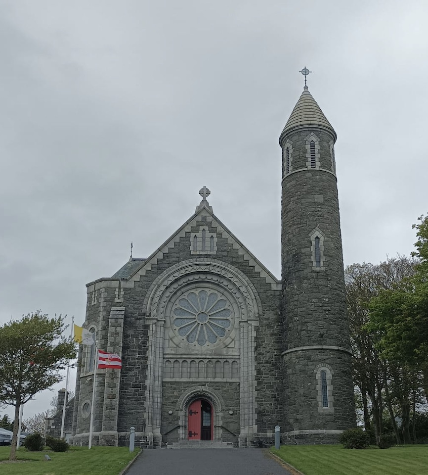

9 Greenore

0650, Saturday May 6, 2023
I’ve decided to kill two birds on this trip, cos my cousin’s stag is on in Carlingford all weekend, so I’m gonna cycle there, catch up with a buncha lads I don’t know, for the afterneevening, and take in a disused lighthouse in nearby Greenore. There’s also a couple of inaccessible lighthouses at sea, visible from land apparently, so I can tick them off today, while focussing on what is fast-becoming the de facto goal of this trip: cycling the entire Irish coastline. Seeing as I finished up in Drogheda last week, it makes sense to start there this week and hug the coast all the way to Dundalk, before turning right along the Cooley Peninsula towards the stag and the lighthouses. This way, I can finally find out whether County Louth merits its status as the forgotten man of the Irish coastline. Plus, I’m happy to stall along to the stag for just a few hours because I can’t be on the sesh like I used to and I’ve long since done my nation plenty proud.
I’m up early and the weather is blanket grey so poor Co Louth won’t be looking the Georgie Best. I bring a tasty pourover in the car with me, along with some crumby toast, and I drive directo to Drogheda train station, planning to park there for the Daniel Doris. It turns out that the car park has been colonised by Apcoa, and while I don’t mind forking out three fiddy for a day’s parking, there’s something sinister about those pricks declaring so much land for themselves. Presumably, there used to be a bog standard car park here, looking identical to this one, with a possibly aulfella on the gate, when suddenly Apcoa declare it for themselves. Where does all that money go? Do they help maintain roads or reduce car-dependency? Me Jackson Pollocks, they do.
I wasn’t in the humour for unearthing the hidden beauty of Drogheda Town, so I cross the main bridge and turn right onto the North side of the Boyne River, before stalling it the 7k out towards the sea, opposite where I cycled in last week from Mornington. The port is on the right, just out of town, but the tide is out and I’m struggling to work out how tidal ports operate. It must be awfully restricting for business to be confined solely to sailings at high tide, and you can imagine how frustrating the lives of the workers must be, as their schedules shift with the tides. We had a similar problem during Covid when my wife worked in the PCR lab, four nights on and four nights off, and her eight-day cycle looped slightly slower than our seven-day skedj. It was like living inside a piece of Steve Reich’s phased music, where our lives only synced with glorious normality once every fifty-six days.
The estuary is untidy and there is a handful of old stumpy stone beacons used to guide boats. While this seems odd to me, having grown up with the neatly arranged Liffey River, it’s a reminder of how messy the Liffey and Tolka estuaries might have been before the docks were built and land was reclaimed around your Ringsends and Fairviews. The geographic similarities between Drogheda and Dublin are evidenced by their Irish names: Droichead Atha is the “ford bridge”, so I guess people must have crossed the Boyne River there and eventually built a permanent bridge. Meanwhile, Baile Atha Cliath, is the “town of the hurdle ford”, which is a series of words I always knew but never understood. It seems to be a place where you cross (a ford) mixed with a buncha bits lashed down to help you cross (a hurdle), and this old RTE clip is set at the supposably bridging point on the Liffey. It’s not clear to me why Dzublin became the main city on the East Coast while Drogheda didn’t, and I suspect that the distance - or navigability - to the sea played a big role. This stretch of wetlands between the sea and Drogheda town may have been less of a help than the deeper Liffey and its shorter gap to the sea. Plus Dublin is closer to Britain, our big brother island.
.jpeg)
Very few people have elected to live along these wetlands, but as you hit the sea, there is a row of south-facing houses on the left, with deep front gardens, overlooking the water, and then the village of Beltray where a Golf club has made use of the sand dunes. But the place is quiet enough that the locals must play bowls on the road, judging by the signposts urging caution. I turn left towards Clogherhead, but en route is the in-betweeny village of Termonfeckin, whose name is its most glaring attraction. A signpost says Tearmann Feichín and I’m trying to work out what a Feichín is - maybe it’s “a little view” - but when I get there I see a school called Scoil Naomh Fheichín and realise it must be a boring old saint, and I’m disappointed. There’s actually quite a lot of #NewHomes round here so I’m guessing these people are going for the living-in-village-near-a-big-town approach. Not a bad shout. I turn towards the coast road for Clogherhead which is Louth’s answer to both Howth Head and Donabate, and on my way in, I see a colony of mobile homes perched by the sea. There’s a holiday park with a big shop outside it and a few units and I’m gaggo to join in the craic some time. I’m always hearing about how much fun it is to spend your summer in one of these places, being outside all the time and the kids having good clean fun all day long. I love when people live on top of each other and can’t go off and hide in their little caves. When you are in a four-bed hostel room, with shared bathrooms, then you make friends fast. Stay a while and you’ll make enemies too. I’ve always wanted to be a front door person, sitting outside and yapping to passers-by, just waiting for craic to happen. Like an aulfella on the wall. I don’t know how people can put chairs in their back garden and plan to stare at their own walls with no chance of outside life occurring.
I get to Clogherhead village and see a couple of cyclists coming in from the other direction and I basically just follow them cos cyclists always go to the good spot. It turns out to be a cafe on the sprawling beach and I get yapping to them of course. They’ve come from Dundalk, after doing the Darkness into Light walk early in the morning, in memory of those who have taken their own lives. I think of Eamonn Donoghue, who is etched in my soul, and now poor Eabha Rosenstock, whose inner zest was probably compromised by living in The Matrix, where she did not belong. I can relate. Me and Eabha might well have been better friends, but now we never will be. I eventually nudge the chat in that direction but they don’t bite and the lady tells me about how beautiful County Louth is, with both the sea and the mountains, and I’m glad that they’ve come from where I’m going cos things can only get better. I’m not a 100% sure if they are a married couple, but they remind me of my parents off touring the world on their bikes, at some indeterminate middle age where you have a perfect mix of energy, time and cash to go and do exactly what you want. I ask them if it’s worth checking out the cliffs on the other side of the headland and they tell me to come back on foot some day, which I will. After that I get the head down and do some proper cycling.
.jpeg)
It’s all been a bit stop-start thus far and sometimes my favourite part is to just cycle and forget that I’ve a book to write. It’s 30 clicks to Blackrock, hugging the coastline, ish, and I aim to get there with an empty belly so that I can munch and listen. Almost nothing happens along this coast as there are no bays, coves, caves or cliffs. No sand dunes. No barrier islands, no muddy estuaries, no calm lagoons. No offshore skerries. No lighthouses, boats, harbours, ports or villages. It’s like cycling through the fecund farmlands of Rest of Leinster, except that there’s a gentle lake on one side called The Irish Sea. I do pass by the thumb-shaped micro-peninsula in Annagassan village and detractors will note that there’s an obtuse headland called Dunany Point, which even the coast road diagonalizes past. You can’t see everything and I comfort myself with the recollection that no coastline is viewable in its mathematical entirely.
I know I’ve emerged from deep farmland into urban sensibility when I see a big-boned young lady on the pavement wearing undersized skinny jeans, as of course no legit culchie cares enough about fashion to get it that wrong. Blackrock is a very nice town, with boutique shops facing the rocky coast, and you can see why it recently won a Tidy Town award for Ireland’s best small town. It is Dundalk’s Dun Laoghaire, and I’d love to go to a cafe and listen to the people talk but I’m only 30 clicks from the stag now and I’d rather just get there asap so I can see my cousin and his crew. I see that he’s online on WhatsApp so I give him a tinkle and he’s sounding ok for 1030am on Day 2 of your own stag. He says they are going for a dip in a bit and then playing Tag Rugby at 2, so it looks like I’ll go directo to them, say hello, and then buzz down to Greenore Lighthouse while they’re playing tag, a non-contact brand of rugby that does very little for me. Like casual dating without the sex.
So I just get a rock’n’roll in a Centra and a pint of boiling soup, then I crouch outside to eat it. Opposite me is another mildly overweight cyclist but he hasn’t got the memo that whenever you find someone in life doing the exact same thing as you, then you are supposed to acknowledge them. Thankfully he moves on quickly and an aulfella from presumably Munster squats down with his two Louth grandchildren licking ice creams, in spite of the dross weather. He tells me he migrated here to be near the family cos he was living in Kilkenny and the journeys were too much on him. I can see why someone would happily relocate here, being a seaside village near a big town, although he says he misses the bike cos he lives on top of a hill and isn’t able for it at his age. I suggest an e-bike but he’s having none of it so there’s obviously more going on. It’s bothering me whether he’s actually from Kilkenny or legit Munster, cos Kilkenny accents can be pretty D’Unbelayvable, although I’ve scarcely ever been there myself. I used to lift a lot of animal feed with labourers from Goresbridge on the Carlow-Kilkenny border. My dad’s shop would get big deliveries from Red Mills, and so we’d handball in a few hundred bags of animal feed every Friday, and yap away to the two lads on the lorry. The driver would always be a proper trucker, adjusted to the outside world, but the non-driver would often be a hand-to-mouth labourer, likely a boozer, sometimes boozing actively, and seldom with the ability to accommodate their speech to outsiders. Some people just don’t get it. Irvine Welsh grabs this in Trainspotting when a convicted Renton and Spud respond affirmatively to a judge. Renton says “Yes, your honour”, while Spud mumbles “Aye”. Renton gets off and Spud goes down. It’s no surprise that Renton was the one who skidaddled to Amsterdam, whereas Spud was just pure dead Leith.

I push on, past a beautiful church and then I bypass Dundalk because that couple in Clogherhead told me to take the main road around it. I’m surprised to find it actually is more pleasant than most main roads but then I turn right on to the Cooley Peninsula and suddenly I’m hit by the wind. All morning, I’ve had it on my back or side, but now it’s driving into me and the child seat on my rear wheel is acting like a sail, as noted by the #realcyclist who pulls up beside me for a wee chuckle. We chat for a few minutes but I’m struggling to keep the pace and I tell him I’m going to have to take his wheel, so he drags me through the air for ten fairly dull kilometers. Eventually, I can take no more and I let him go, thanking him as I shoot out the back. Now you never see much when you are on the wheel of another cyclist cos your head is down and you are concentrating like mad on their movement. I’ve made the mistake of taking the easier path to my destination, along a main road. There’s a gorse-decorated mountain to my left and I wish I was climbing over it, thinking about sugar and spice and all things nice, rather than worrying about potholes pushing you into the path of whichever scary vehicle is passing by. I completely forget about the Dundalk Lighthouse, which is barely visible from the coast and, like the ones in Mornington, it moves around on its spidery stilts. It’s finally time to either push on to the Greenore Lighthouse or else take a left over the tail end of the hill to Carlingford, avoiding this miserable main road. I choose Option B because I want to catch Gish and his crew before they head off to play tag. That way I can kinda meet them twice, before the rugby, then Pat Rafter, as the drinking kicks off. And with an hour’s bantersmash in me, I’ll have my curiosity head back on for Greenore, cos I’m learning now that there’s a limit to how much you can soak up on the continuously bike.
.jpeg)
Carlingford sits on the nice side of the Cooley peninsula, with the steep mountain at its back and the wide lough to the fore. Across the water are the Mourne Mountains of County Down, and clearly we are in a different geographic space now. The tourists’ accents suggest that this is as more an extension of Ulster than an extremity of Leinster, and the yellow registration plates corroborate this. I decide against exploring the medieval town yet so I find the gaff where Gish and half of the lads are staying and it’s great to see him, a big lump of everlasting radiance, here with his crew. He might be Ireland’s most popular man, with thirty-plus people spread across two houses, and another few dozen who couldn’t make it. I could see from the WhatsApp group alone how loved he is. Mercifully, there is little unity to the group at this hour as everyone is still recombobulating themselves after last night, so Gish is free for chats and to introduce me to a few of the lads, and lasses, as they come and go. It’s the first time I’ve seen a heavily pregnant woman at a stag party. Fair play to everyone involved and to Paulie for putting on this show. I lash on the kettle and sit down at the kitchen table, with Gish stood opposite, and we have a bit of a date-with-an-audience, with our rugby lives being the conversational scaffold around which we bantersmash, bouncing our pasts off one another, and Irishly making sure everyone knows who everyone is.
Me and Gish would have spent a good bit of time together as kids, cos our mams are close, and he lived with our granny, but we drifted apart as teenagers when the four-year gap mattered more. Things were probably complicated by our granny having dementia and the impact that had on our mams, especially his, who had to look after her all the time. We started hanging out again as young men, when he was doing the Leaving and I was finishing college. It’s only today, while we are all shooting the breeze in the kitchen, playing a rapid-fire game of Remember When, that he reminds me the reason we were meeting up in the first place was that I was giving him maths grinds. Those few lessons morphed into cans and gigs and we’ve been close since, even if the number of contact hours have never been that high. Those childhood experiences have a long half-life. But it’s also reminder of how important it is to have structured activities between indirect relatives. Teaching maths to my nephew and two nieces was a great way for us to spend time together, and I also worked for years with my brother-in-law (their dad), in my dad’s shop. Without such structure, it can be hard to bond across ages and sub-families.
The lads all stall off to the tag rugby and so I have time enough for a Brad, Paddy and a Mexican, although I’ve forgotten my razor. I change back into my civvies and then sauntercycle off to the lighthouse. The sun is out now and the landscape glistens. I follow the main road for a bit, then I nudge off alongside a beautiful golf course, where all the players seem to be women. I’m tempted to shout out some mock-sexist comments, especially with all that stag juice in my blood, but I finally see a male golfer and I’m glad I’ve kept my trap shut. The road passes by the serene village of Greenore, and round the bend to a forlorn chunk of seaside, with a joyless port to the left and a strand forgotten by all but dogwalkers. The lighthouse is disused and sits behind a wall so I have to lift my phone overhead to get a snap of the thing. Much more invigorating is the slim, elegant Haulbowline lighthouse, a click or two out to sea, disecting the Eastern view of the lough. To the north are the Mourne Mountains of Nair Nairn, and it’s strange to see it across a body of water, as an overseas territory. Normally you just drive there and the only difference is the colour of the roads plus that ineluctable foreboding. The place fascinates me, being both Our Land and not Our Land, and it’ll be great to soak it up from the discomfort of my bicycle.
Dotted around are posters explaining the curious history of this purpose-built Victorian village, in filmset condition, and I stall the ball to soak it up. A deepwater port was built here as an alternative to tidal Carlingford, and the village housed the workers. A ferry provided a northern connection to Holyhead, for cattle and passengers, while a little train line connected to Dundalk and Newry, bringing kids to school and keeping this remote peninsular village connected to the mainland. The passenger ferry was discontinued soon after Partition, and the cargo ferry and trainline were closed down in the 1950s, making redundant a local teenager by the name of Jimmy Magee, who soon after began his legendary career as a sports commentator. Sadly the station and its luxury hotel have been demolished, along with its warm seawater baths, according to this actual trainspotters’ forum. Nowadays, there is a shuttle ferry connecting to the Northern side of the lough, saving locals a 50k round trip, while the port continues to ship cargo, emitting dust-bearing lorries that rattle along at the frightening speeds of the overly familiar. The village, being set back from the main road, escapes this horror, and it feels like a time warp. The tea rooms survive, with a museum inside, and the lady tells me that the village’s 150 year anniversary was only last week. It’s a shame to have missed out but it occurs to me that I might start coinciding some of these trips with local events. A barrage of cyclists arrive and I leave her to it, rather than going to the museum, so I mosey round to the other residential street whose single line of terraced houses faces the entrance to the golf club.
Greenore golf course runs a tiny old train line which used to bring passengers from Dundalk and Newry to the Greenore ferry which provided a northern passage to Holyhead, although it was discontinued soon after Partition. In the background sit the Mourne Mountains in The Black North, partitioned naturally by the obscured lough.

On my cycle back I think of the late, great Jimmy Magee. He was one of my heroes as a kid, commentating on everything and co-presenting Know Your Sport, which me and my dad watched religiously every Monday, seeing if we could get the answers faster than the contestants. Being a sports commentator was one of the only jobs I wanted to do as a kid, like Michael O’Muircheartaigh or Gabriel Egan, and, as an adult, Michael Corcoran who brought European Cup Rugby to life. I ended up doing a wee bit of it in Lansdowne and I commentated on all their matches when they won their first AIL in 2012-13, with Tadgh Beirne and John Cooney on the team. I loved it so much but I’ve just never been able to commit my entire existence to sport cos I have this weird thing where nothing fills my soul except for writing. Still, I really ought to get back to it for the lolz.
Back at the stag party, the lads have booked a pitch in Carlingford Rugby club, and I find Gish in his element on the field of play, with his dinky kicks and no-look passes. You can see how happy he is and how happy everyone is that he is happy. The tag rugby tournament is entering its latter phase and the semi-finals are about to kick off. Any noobs have been being subbed out by fellas looking to double up across teams, getting as much game time in as possible. Part of me would love to be out there playing but a stronger part just couldn’t give a rats. I’m on the sideline, kicking and passing the ball, like old times, but the urge to compete isn’t there. My relationship with sports and games has changed over time, like I’ve outgrown them and I’m searching for something more. It’s like a mini version of my relationship with life in general, or at least how other people live it. While others scramble to play by the rules and have some fun while making ends meet, I am half in and half out. I’ve been working for the man for three years now and I’ve almost caught up with the gang, cos we’ve just been mortgage approved. The question is whether we want to commit to twenty-eight more years of working for the man so that we can live at home near family and friends, with lots more boola jobs around, or if we should just up sticks and live a cheaper life elsewhere, freeing up time to travel and write, and do the things we want. Sharifa wants to grow a garden and have some animals and have her own art studio. I just want my time back. I’m at my best when I have the freedom to explore and investigate. And I know that if I keep writing and keep doing interesting data projects, then I’ll converge on the right format for expressing myself.
The tag rugby ends and we stroll back to the gaff where a hog roast has been cooking. I get yapping to the ladies serving the food and it turns out they are driving the van back to Drogheda, Pat Rafterwards, and they say they can give me a lift back. This means I don’t have to worry about finding a Joer or, God forbid, cycling another 25k to Dundalk train station. I hang around for a couple of hours, scranning hard with the boys, who are all spruced up now and kitted out in Hawai’ian shirts, ready for the dark hours ahead. It’s hard to remember who is who because I was just getting used to them in their sleeveless tag gear, spaced evenly across the pitch and memorable by their movements. Like a commentator would. It’s fun now catching up with Gish’s mates. We’re talking double weekends as a front rower and the rebranding of Killester as Clontarf North. One lad in a foot brace tells me about the option of sea kayaking out to the inaccessible lighthouses, which is something I hadn’t thought about. It turns out he’s an instructor for water sports and he banjoed his leg jumping onto rocks in shallow water. That kind of carry on would bring a whole extra dimension to this project, and the idea is planted. I say goodbye to those around me and lob my Paul van into the back of the actual van and then I sit in the middle seat up front. I ask the ladies for a selfie with the three of us so that I can assure my wife I’m alright. We have a few laughs and they tell me about travelling all over the country and the ideas you get and the craic they have. I’m home by 10pm, early enough to put the chunfla to bed as he has waited up to see me, and I nod off in the knowledge that I’ve had a very, very wholesome day.